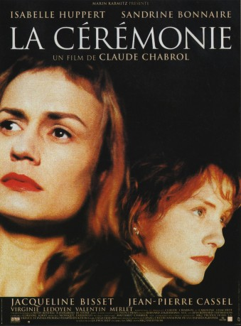

#11074 Biester
Alternativ: La Cérémonie (Englischer Titel)
 
 IMDB-Wertung: 7.6 / 10
IMDB-Wertung: 7.6 / 10  Metascore: 0
Metascore: 0 
The upper-class owner of a gallery, Catherine Lelievre, hires the efficient and quiet maid Sophie to work in the family manor in the French countryside. Her husband Georges Lelievre, who is an opera lover, her daughter Melinda and her teenage son Gilles welcome Sophie and appreciate her work. Sophie soon befriends the postmistress Jeanne, who is a bad egg and encourages Sophie to rebel against her employers, but the maid stays submissive. However, Sophie is ashamed of a secret and feels uncomfortable in many situations, finding a way to hide her secret. When Georges tells Sophie that he does not want Jeanne in his house, Sophie stands up to him. Melinda discovers her secret and Sophie blackmails her, but Melinda tells her parents what happened. Georges fires Sophie and she returns to the house later with Jeanne on the rampage.
Jahr: 1995
Dauer: 106 Minuten
FSK: 12
Land: Frankreich Studio: FilmweltTonspuren:
Untertitel:
Auflösung: 720p (1280x720) Größe: 4710 MB
Genre: Thriller, Drama, Krimi, Mystery
Regisseur: Claude Chabrol
Drehbuch: Ruth Rendell, Claude Chabrol, Caroline Eliacheff, Claude Chabrol, Caroline Eliacheff
Soundtrack: Matthieu Chabrol
Darsteller:
 Isabelle Huppert als Jeanne la postière
Isabelle Huppert als Jeanne la postière Sandrine Bonnaire als Sophie la bonne
Sandrine Bonnaire als Sophie la bonne Jean-Pierre Cassel als Georges Lelievre
Jean-Pierre Cassel als Georges Lelievre Jacqueline Bisset als Catherine Lelievre
Jacqueline Bisset als Catherine Lelievre Virginie Ledoyen als Melinda
Virginie Ledoyen als Melinda- Dominique Frot als Madame Lantier
- Jean-François Perrier als Priest
 Stéphane Audran als Lucienne Delamare in 'Les Noces Rouges' (archive footage) (uncredited)
Stéphane Audran als Lucienne Delamare in 'Les Noces Rouges' (archive footage) (uncredited) Michel Piccoli als Pierre Maury in 'Les Noces Rouges' (archive footage) (uncredited)
Michel Piccoli als Pierre Maury in 'Les Noces Rouges' (archive footage) (uncredited)- Valentin Merlet als Gilles
- Julien Rochefort als Jeremie
- Ludovic Brillant als
- Claire Chiron als
- Claire-Marie Dentraygues als
- Jean-Pierre Descheix als
- Penny Fairclough als
- Alain Françoise als
- David Gabison als David
- Pierre Gondard als
- Claire Ifrane als
- Philippe Languille als
- Philippe Le Coq als Philippe
- Joëlle Legua als
- Christophe Lemoine als
- Christine Melcer als
- Sarah Maze-Lauray als
- Mélanie Maudire als
- Serge Rousseau als
- Yves Verhoeven als Delivery Boy
- Samuel Ramey als Don Giovanni, from opera broadcast (uncredited)
Datei: X:\1995\Biester (1995, FSK12, 1280x720).mkv seit 24.04.2019
Festplatte: Gemischt-01+Anime
 Es gibt insgesamt 85 Filme in der Gruppe '1995'
Es gibt insgesamt 85 Filme in der Gruppe '1995'